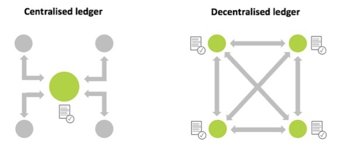
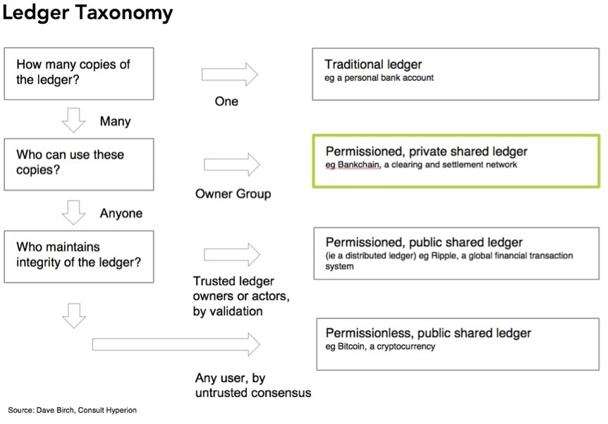

FAQ
Benefits
Log files reconciliation requires log file data provided by various individual supply chain participants to be consistent. One way to address this question is to define detailed standards for log file formats, data fields naming conventions, taxonomies and meanings. To come to an agreement on industry logging standards is taking time and will require significant investments from adtech vendors to adjust their logging systems.
The other approach is to write log file data to the TAG TrustNet DLT network, where it is automatically harmonised to a common network format at the moment it is written. This approach requires less investments from ad-tech vendors, as it allows to use any formats, taxonomies and naming conventions as long as they can be harmonised to a common format. The only standard required to avoid any ambiguity is to define the meaning of data fields. With this approach the log files reconciliation functionality may be supported by the industry much faster with minimal changes required from ad-tech vendors.
In general, CV Providers deliver ad effectiveness impression data, blocking and pre-bid tools. They do not cover cost efficiency (supply chain costs), ad delivery/reconciliation, and compliance to industry standards. By incorporating your CV data within TAG TrustNet you are able to:
Confirm what site and application ads actually appeared on. Matched log-level data from the DSP, SSP, ad server and CV company are used to confirm the domain that was recorded for an impression from each platform. If there are differences this can help identify technical problems, misplacement, and domain spoofing.
Matching cost data from the DSP and SSP means you can analyse standard verification metrics leading to better business decisions.
TAG TrustNet allows you to evaluate how industry standards (ads.txt and sellers.json) and certifications (TAG) get implemented in a single place to improve brand safety, and reduce fraud, malware and piracy.
TAG TrustNet reconciles supply chain participants data producing a single shared truth that can be used for discrepancy management, managing partner and tag deployments and improving operational efficiency.
Compliance
TAG TrustNet does not allow its members to process Personal Data or otherwise link data within the TAG TrustNet with other data held by a participant to create Personal Data. Every TAG TrustNet member shall comply with TAG TrustNet Member Requirements, which state that log-level data provided for ingestion into TAG TrustNet shall not include any Personal Data and, as such, should fall outside of the scope of data protection laws, including, without limitation, the GDPR and the CCPA. All Personal Data, and any data fields which represent “pseudonymous data,” shall be removed before the underlying dataset is ingested into TAG TrustNet.
- “Personal Data” means any information defined as “personal data,” “personal information,” “personally identifiable information,” or other similar term under applicable data protection laws.
While impression timestamps and oRTB Bid Request Impression IDs that are ingested into TAG TrustNet might be considered “pseudonymous data” in some circumstances, it is “anonymous data” in this case because:
– It is not possible for Fiducia, as a platform provider for TAG TrustNet, to use this data to identify an individual and;
– TAG TrustNet obfuscates these data fields when they are exported to reasonably prevent anyone from linking TAG TrustNet impression records to an individual (see below for more details).
In addition to the above, Fiducia, as a platform provider, takes the following steps to reduce risks of re-identifiability of data ingested by, or exported from, TAG TrustNet, so as to achieve the standards of anonymization under applicable data protection laws (such as by not allowing re-identification via the “means reasonably likely to be used” by a third party, per the GDPR standard for determining whether data is “identifiable”):
– For all supported data sources, the TAG TrustNet Node Data Connectors filter any data fields that represent Personal Data from processing in the TAG TrustNet. Only data fields outlined in TAG TrustNet Member Requirements are ingested to by TAG TrustNet for processing.
– When data is exported by TAG TrustNet Members to external databases, the TAG TrustNet Node obfuscates oRTB Bid Request Impression ID, oRTB Bid Request ID, and Timestamp data fields as follows. oRTB Bid Request Impression IDs and oRTB Bid Request IDs are replaced with anonymous impression IDs, which cannot be linked back to original oRTB Bid Request Impression IDs or oRTB Bid Request IDs. Timestamps are rounded to 1-hour intervals.
TAG TrustNet can verify the following:
- ads are coming from a publisher that has an ads.txt or app-ads.txt file.
- ads are coming from an exchange that has a sellers.json file.
- based on log level data from the exchange, the exchange is listed as an authorized seller in the publisher’s ads/app-ads.txt file, and the publisher is identified as a known source of inventory in the exchange’s seller.json file. This is technically done by verifying the seller ID from the SSP log file matches the seller ID (also called the Publisher’s Account ID) in the ads.txt or app-ads.txt file AND the seller ID in the sellers.json file.
General Information
It is a type of database which stores transaction records and is consensually shared, synchronized and accessible across multiple organisations, sites, institutions, or geographies. A distributed ledger stands in contrast to a centralized database, which is more prone to failures, cyber-attacks and fraud, as it is administered by a single organisation and therefore has a single point of failure.

TAG TrustNet is a permissioned network, as opposed to unpermissioned networks like Bitcoin that are open to anyone. It is pemissioned in three ways: (a) the participants need to agree to the governance and control principles to participate to the network, (b) the participants need to be approved to become network members, (c) the participants need to comply with the network minimum requirements at all times.

There are three ways in which the data from TAG TrustNet can be trusted:
- The source of the data being reported to TAG TrustNet is authenticated by the network, so there is no question about who is providing the data.
- TAG TrustNet stores the impression data using distributed ledger technology which creates an immutable record of the transaction.
- The data for each impression that is collected from all the companies that were involved in delivering it can be compared to see if there are any inconsistencies.
It may be helpful to provide a little more information about the last point. One of the key deliverables from TAG TrustNet is that the impression data that is available from each vendor who was involved in delivering an impression is being stitched together to create a single record of each transaction across the supply chain. As a result of this, the data about the same impression from different sources can be compared and inconsistences can be identified. For example, if impression is reported by DSP, but not reported by SSP or ad server - most likely it was not delivered. Here are some other examples of this:
- The impression clearing price from a SSP reports can be compared to that reported by the DSP.
- The publisher domain recognised by a SSP can be compared to the publisher domain recognised by a verification tool (if they do not match it may be a sign of domain spoofing).
- A SSPs-reported platform fee can be cross-checked with payment data from publishers.
It should be noted that TAG TrustNet cannot guarantee that vendors will report data correctly, but it registers every piece of impression level information received from vendors in the distributed ledger–ensuring that after receipt impression data can’t be changed and remains immutable. If a vendor changes data in their systems after it was reported to TTN it may be detected and proven.
Some blockchain detractors have been claiming that blockchains have a massive negative impact on the environment due to high energy consumption. This is probably due to a misunderstanding around the Bitcoin use of blockchain and other types of blockchains. What is true for the Bitcoin as a public network based on a “proof-of work” protocol, requiring a digital-labor intensive “mining” process with high energy demands to validate each new block of data, is radically different for permissioned private networks. In a permissioned network, such as the one implemented by TAG TrustNet, each block can get validated by a handful of nodes acting as notaries, with the energy consumption of not more than a few PCs. The expectation with permissioned networks is that in most cases the efficiency gains provided by DLT - reducing paper trails and running automated processes to reconcile, record, audit data - will have a significant positive impact on the environment rather than the other way around. In addition to this, the TAG TrustNet platform runs distributed ledger transactions only to register large blocks of impression data instead of doing that for every impression. This further reduces the energy consumed by the platform. For more details on the efficiencies of private blockchains, please see this article from R3, the company providing the private blockchain platform used by TAG TrustNet (https://www.r3.com/blog/just-how-energy-efficient-is-your-blockchain/)
In addition to this:
- The technical infrastructure of TAG TrustNet uses AWS and Amazon has committed to being carbon neutral by 2040, 10 years ahead of the Paris Agreement.
- TAG TrustNet is also working with the AD Net Zero Advertising Association through the IPA and other 3rd party companies to reduce the carbon footprint in programmatic advertising. This is done by providing transparency to advertisers and their agencies of the carbon footprint created by their ad campaigns and how they could reduce it.
- There are also other socially responsible benefits that are available to companies using TAG TrustNet. Currently this includes reducing ad spend going to criminal activity, and in the future may involve DEI, Corporate Social Responsibility and user privacy.
Governance
Intermediaries and Publishers
For intermediaries (such as ad servers, CVs, DSPs, and Exchanges/SSPs) and publishers here is a summary of the process to join:
- Become a TAG Member and be verified as a legitimate legal entity with a TAG ID
- Agree to the network requirements and sign the TAG TrustNet Membership Agreement
- Sign the TAG TrustNet Licensing & Service Level Agreement
- Complete the Node and Data Assessment Form
- Get a Data Connector built and approved
- Get a Network Node set-up allowing to import and share data with other network members
- Set up ongoing data feed(s) based on advertiser requests
- Information security is a top priority for our company and is governed and enforced by our leadership. Our security program is based on industry standards and best practices including NIST, ISO, CIS and others as required for specialized needs (cloud specific, application security, etc.)
- Through formalized Written Information Security Policy (WISP) and supporting standards and procedures, we are able to track and monitor the health of our program and better ensure all employees follow our standard for consistent security practices.
- Data is stored in encrypted AWS S3, encrypted EBS, encrypted records in Amazon Dynamo DB and in Amazon Aurora. Data is disposed securely according to AWS policies.
- We use AWS KMS for encryption of all EBS volumes and S3 buckets that contain customer data.
- Each customer is supplied with dedicated EC2 instances, EBS volumes and S3 buckets to work with his data using Fiducia software.
- Vendor risk is controlled by our formal Third Party Risk Management (TPRM) program to ensure any vendor who may host, store, transfer, process, manage, or otherwise handle your data and information is vetted prior to any engagement and meets a high standard of minimum security practices.
- Our contracts with third parties incorporate privacy and security obligations designed to ensure a level of data protection similar to and not less than our own privacy and security controls.
- We perform an annual business security risk assessment that addresses the confidentiality, integrity, and availability of data and information both internally and with the assistance of an outside third party assessor.
- We are in the process of preparing for a SOC2 certification with an anticipated certification date by the end 2022. Our certification scope will cover the totality of systems, facilities, and personnel that handle and process customer information.